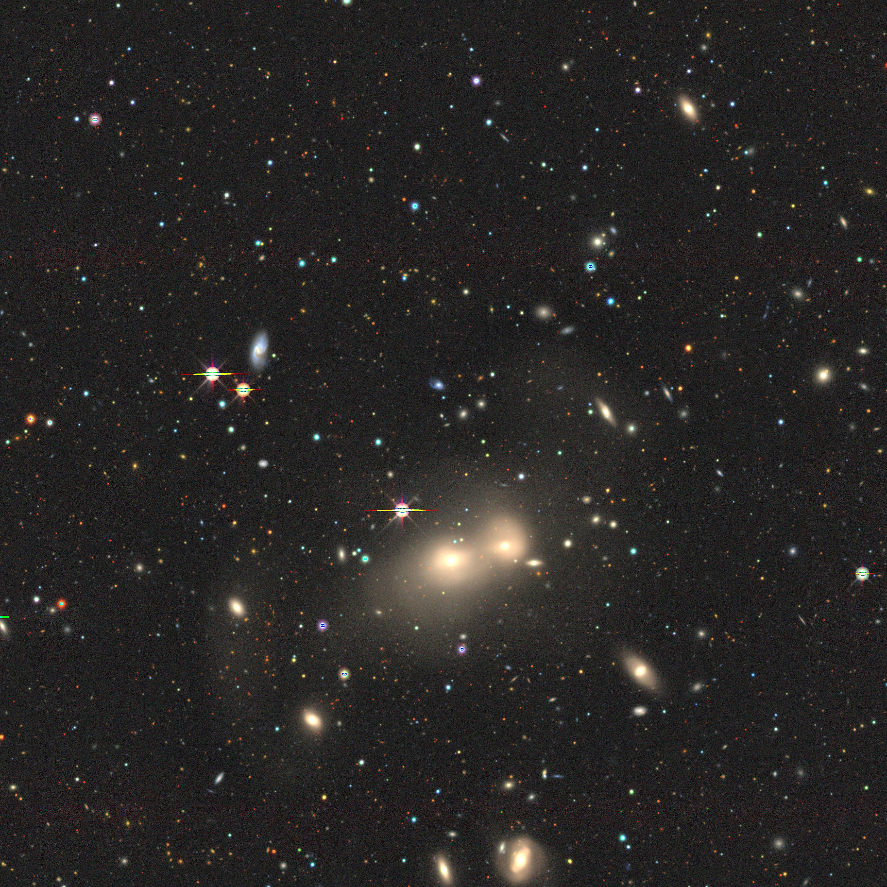

En general, para hacer uso de SExtractor, se siguien los siguientes pasos:
- Identificar y medir el nivel de fondo (Background).
- Aplicar un umbral a la imagen respecto al fondo.
- Localizar y separar fuentes que aparecen por encima del umbral.
- Producir un catálogo de fuentes y sus propiedades medidas.

Para usar SExtractor se necesita una imagen en formato FITS. Se puede descargar una imagen de ejemplo desde el siguiente enlace .
La imagen que utilizaremos tendrá el nombre de
IMAGEN.fits.

Para hacer uso de SExtractor se necesitan 3 archivos de configuración que vienen por defecto en el paquete fuente de SExtractor